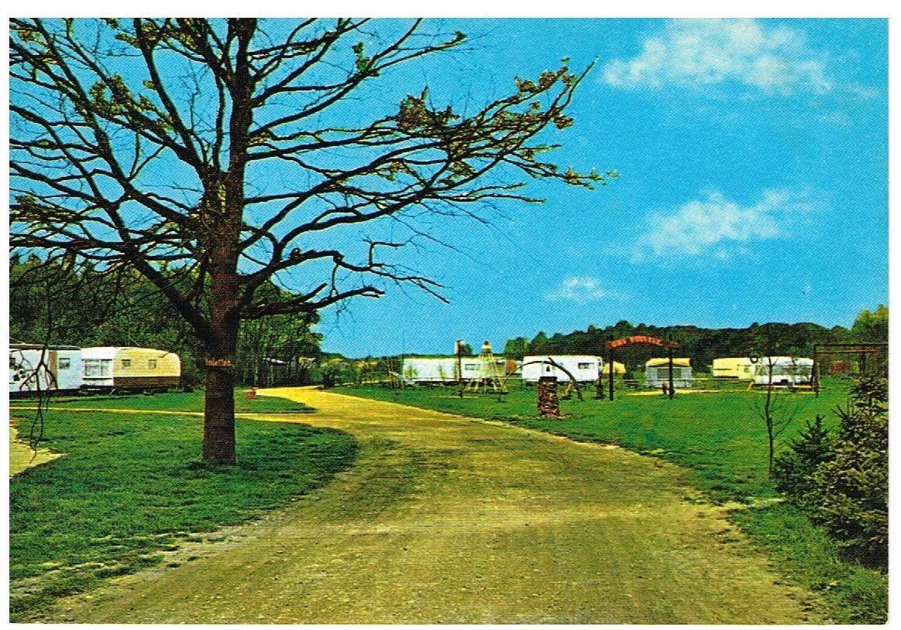
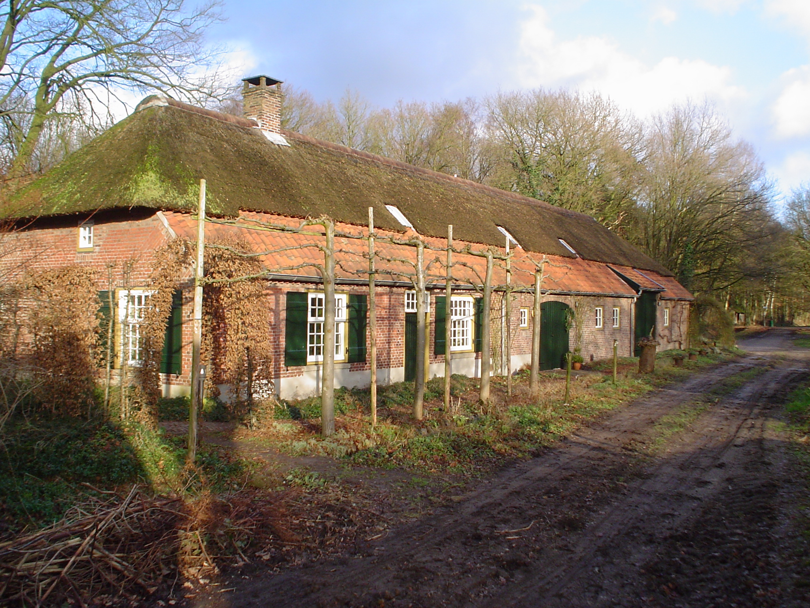
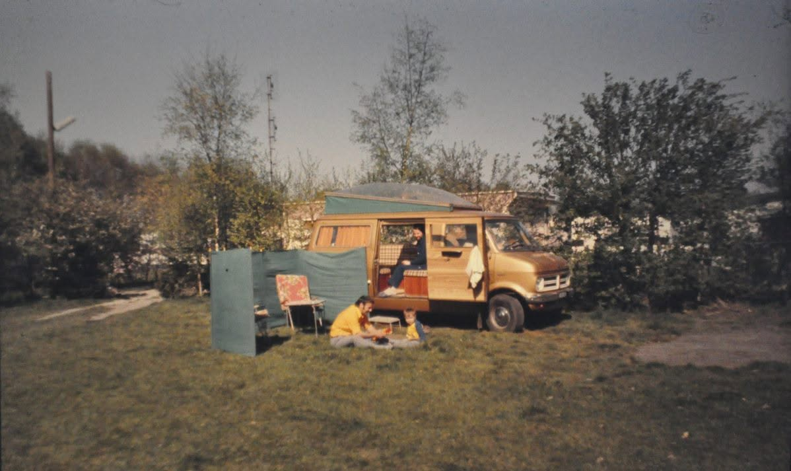
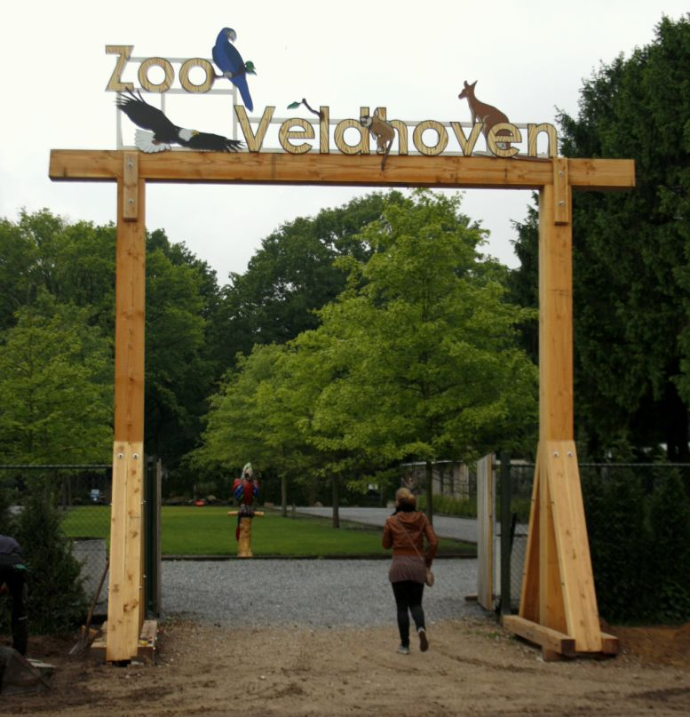
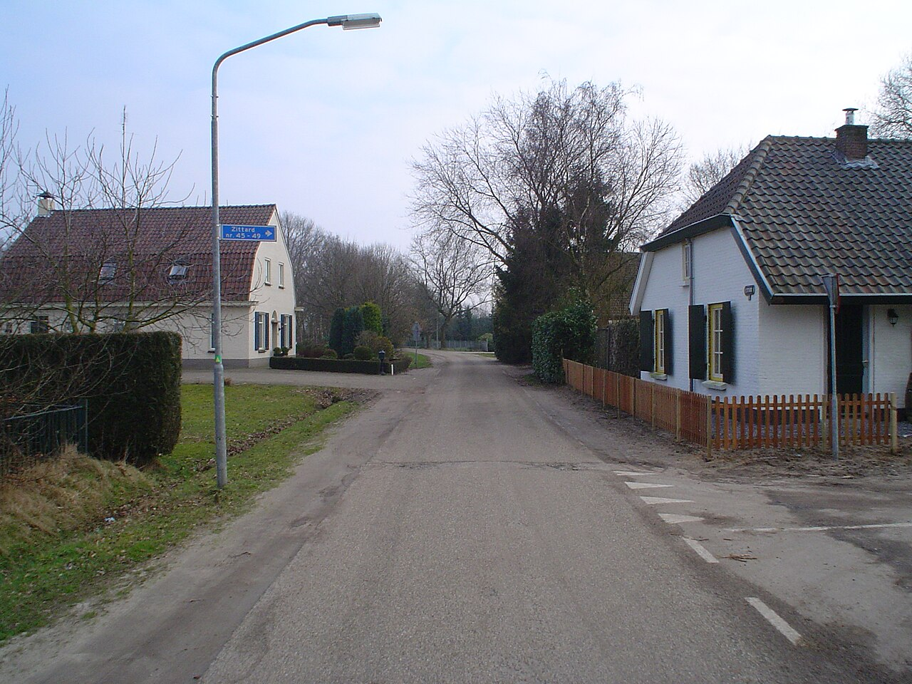
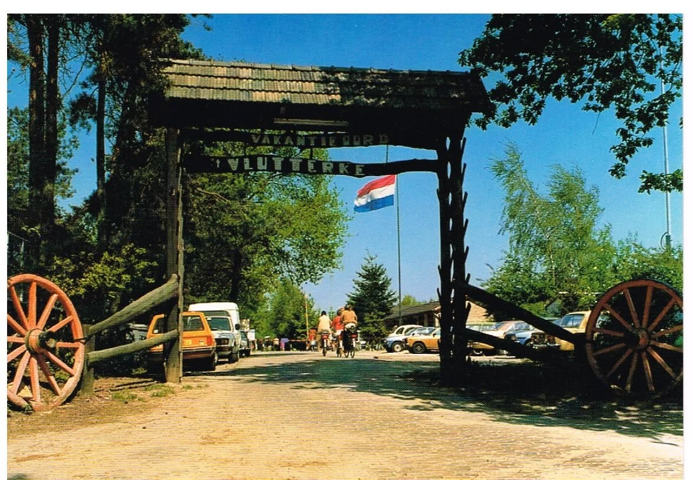
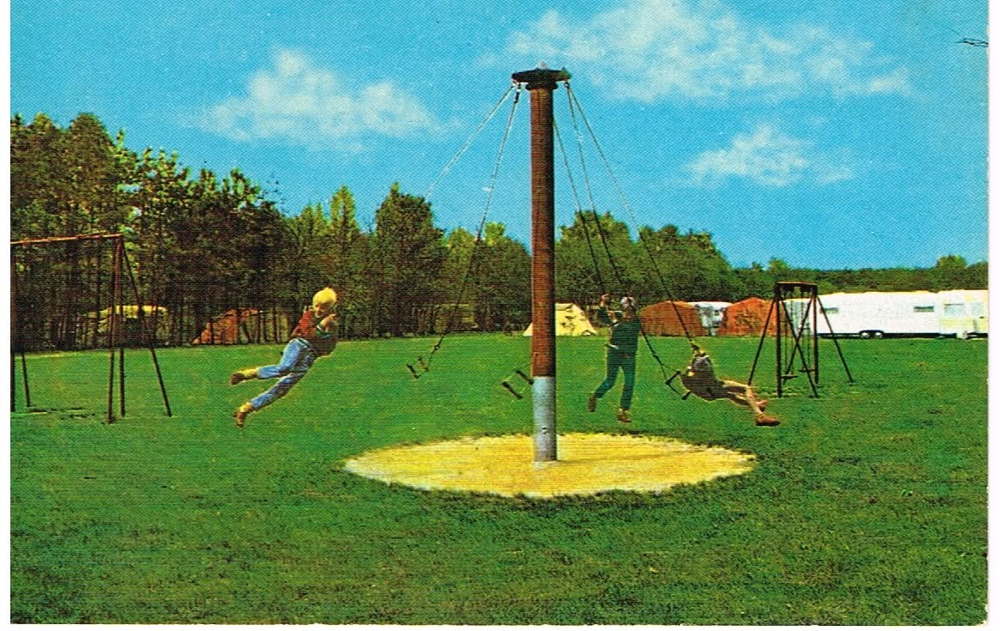
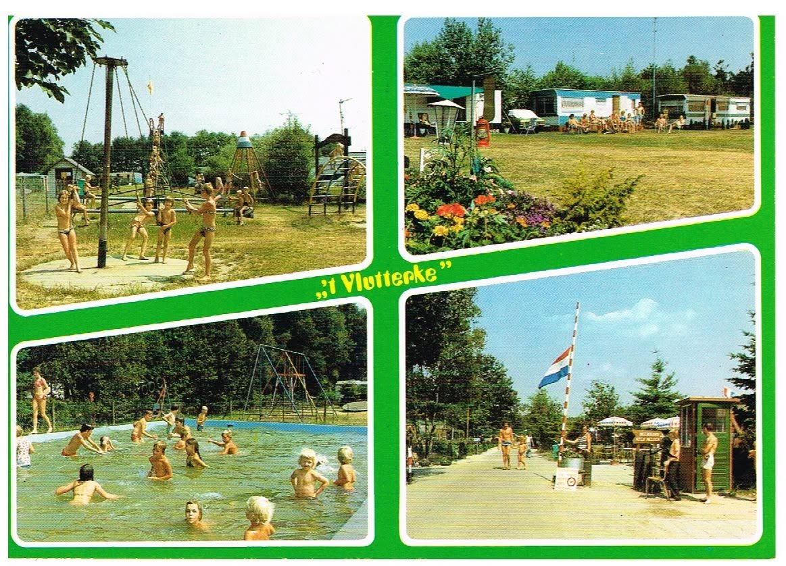
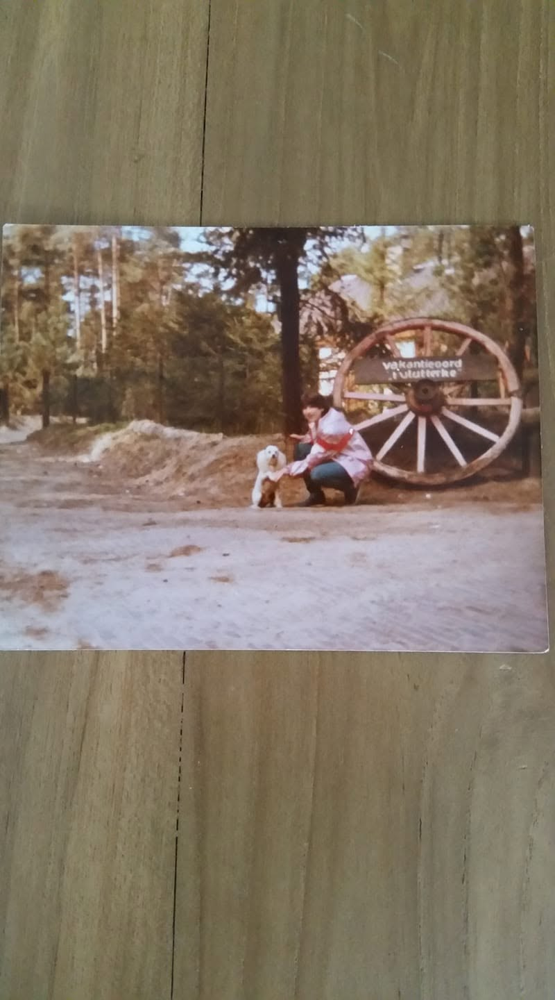

't Vlutterke
Mooi was die tijd.
Van 1967 tot begin jaren negentig kampeerden families aan de Kleine Vliet in Oerle. Zwembad, speelveld, caravans onder de bomen — en nu nog steeds een plek om blij van te worden.

Toen
Zandpad, caravans en een bord in het gras
Geen bergen, geen rotsen — gewoon Brabant: bomen, veld en vakantie. Deze foto’s komen uit de verzameling rond de camping.
Oerle · Veldhoven · 1967
Een vakantieoord tussen bossen en de Bruggenrijt
In 1967 openden de broers Theo en Harry van der Sangen vakantieoord 't Vlutterke aan de Kleine Vliet 2. Burgemeester Gerard Elsen knipte het lint. Vanaf de jaren zeventig groeide het uit tot een kampeerterrein van zo’n 18 hectare: zwembad, sport en spel, caravans onder de Brabantse bomen.
De naam paste bij het gehucht Vliet — vroeger De Vlut, afgeleid van vloet: moerassig, laaggelegen hooiland. Voor veel families was ’t Vlutterke geen verre bestemming, maar hét vaste adres voor een weekje buiten.
Begin jaren negentig veranderde een baanverdraaiing op Eindhoven Airport (toen Welschap) de luchtruimte boven het terrein. De onderneming verhuisde naar de Banstraat en ging verder als Camping Molenvelden — vandaag Vakantiepark Molenvelden. Het verhaal stopte niet; het kreeg een nieuw adres.

Door de jaren
Van tentpeg tot dierentuin
-
1967
Opening 't Vlutterke
Theo en Harry van der Sangen starten het vakantieoord. Officiële opening door burgemeester Gerard Elsen.
-
jaren ’70
Groei tot 18 hectare
Zwembad, activiteiten, vaste gasten. Het vaste koffieadres van Oerlese postbode Jan Verblackt, volgens lokale herinneringen.
-
1987
Twintig jaar feest
Er verschijnt zelfs een delftsblauwe herdenkingsbierpul — zo stevig zat de camping in het geheugen.
-
begin ’90
Baanverdraaiing, vertrek
Door Eindhoven Airport moet de camping sluiten. Verhuizing naar de Banstraat: Camping Molenvelden.
-
1992
Papegaaienpark N.O.P.
Het voormalige campingterrein wordt opgekocht door de Stichting Nederlandse Opvang Papegaaien.
-
2014
Zoo Veldhoven
Na een doorstart opent het park als Zoo Veldhoven — nog steeds op de plek van de oude camping.

Verhalen
Heimwee, zwembad en een volle aanhanger
„Het is maar voor een week Jan!” riep Rinus toen het gezin uit Liempde aankwam met een propvolle aanhanger. De kinderen waren meteen in hun element — sport, spel, zwembad. Tot Annie ’s avonds in huilen uitbarstte van heimwee. De volgende ochtend stonden ze alweer klaar om naar huis te gaan.
— Naar het verhaal van Bert Broekman, BHIC (eerder in de MooiBoxtelKrant)
Op Facebook delen oud-kampeerders nog steeds foto’s en anekdotes in de groep rond camping ’t Vlutterke Oerle. Die collectieve herinnering is de levende archiefkast van de camping: geen officiële brochure, maar echte zomers.
Lees het BHIC-verhaal →

Van camping naar zoo
De plek bleef een bestemming voor families — alleen slapen ze niet meer in een caravan, maar wandelen ze langs volières en bamboo jungle.

En de buurt woont nog steeds met plezier
In gehucht Vliet en de omliggende dorpen Oerle en Zandoerle wonen nog altijd mensen tussen langgevelboerderijen, bossen en de Bruggenrijt. Zo’n 260 inwoners in Vliet (2023) — rustig, groen, en met de zoo als bijzondere buur.
Mooi was die tijd. En mooi is het hier nog steeds.
Galerij
Zo zag ’t Vlutterke eruit




Oerle · De Vlut
Buurtpartners
Ondernemers uit de buurt die deze pagina mee mogelijk maken.
Ook zichtbaar op deze pagina?
€50 compacte vermelding · €150 uitgelichte buurtpartner
Mail voor een plekBronnen & credits
- Wikipedia — Vliet (Veldhoven)
- BHIC — Vakantie op camping ’t Vlutterke (Bert Broekman)
- RHC Eindhoven — Ingang vakantieoord ’t Vlutterke, 12-05-1971 (Jos Pé)
- Facebook-groep rond camping ’t Vlutterke Oerle — herinneringen van oud-bezoekers
- Wikipedia — Zoo Veldhoven
- Lokale foto’s: Wikimedia Commons (o.a. A. Ansems e.a.) · sfeerbeelden: Unsplash
Onafhankelijke pagina — geen officiële site van Zoo Veldhoven of Vakantiepark Molenvelden.